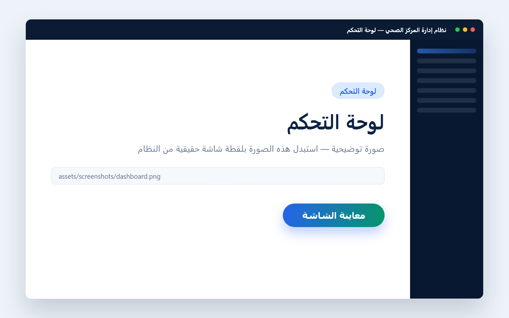
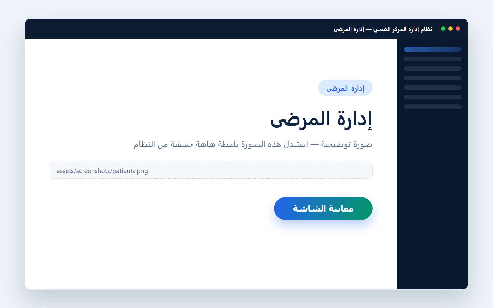
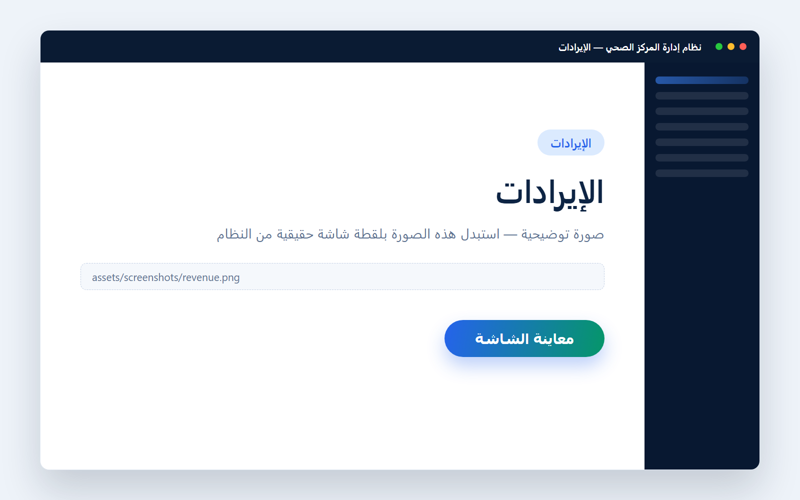
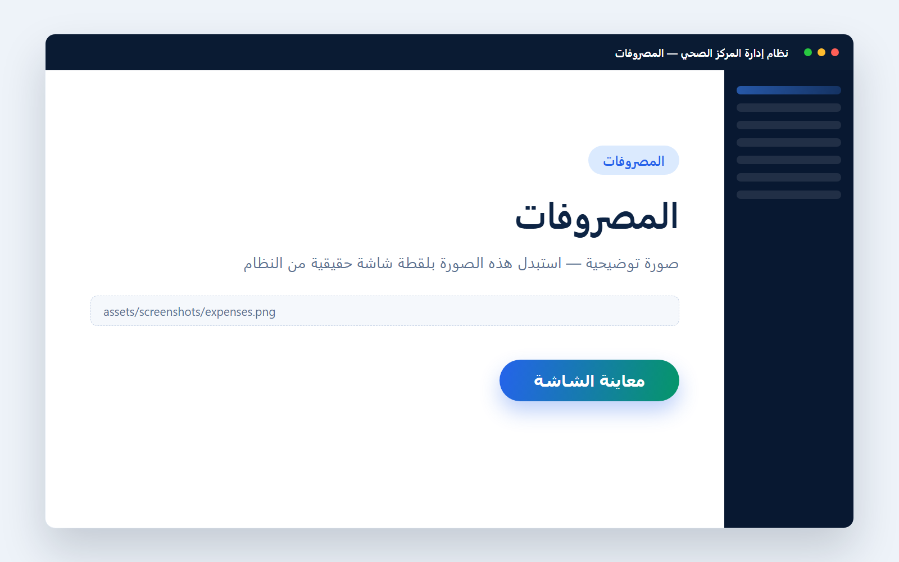
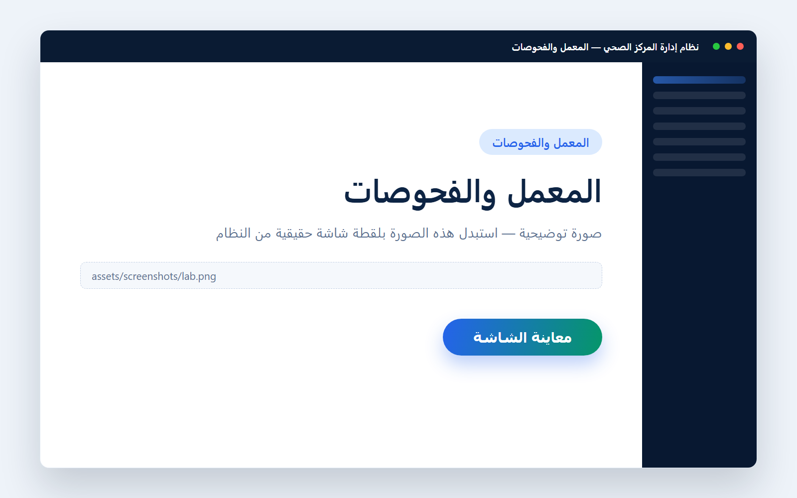
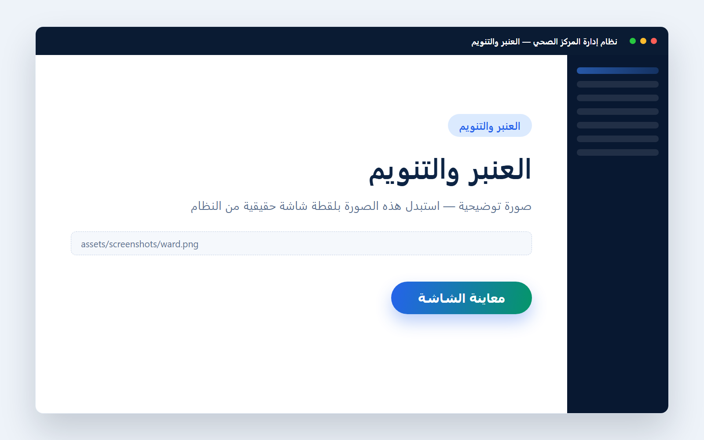
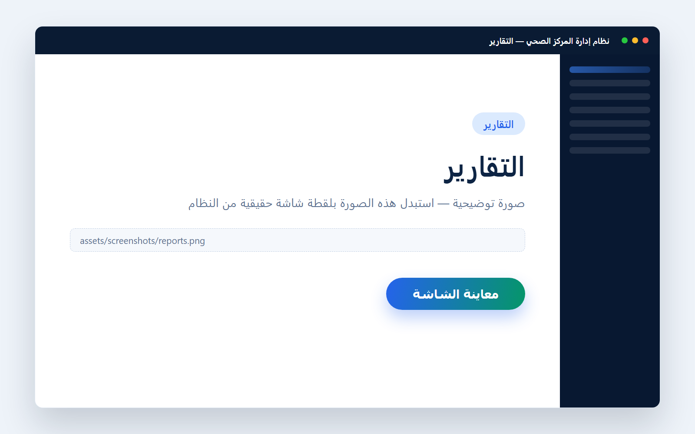
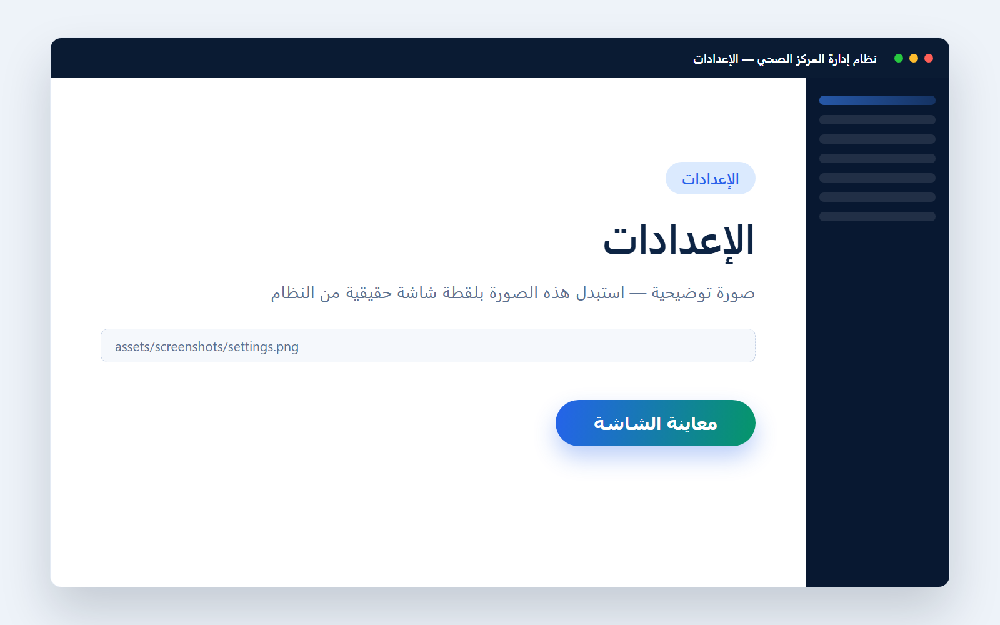

إدارة ملفات المرضى
تسجيل المرضى برقم ملف فريد، بيانات كاملة، بحث بالاسم أو الرقم أو الهاتف، وسجل لكل زيارة.
حل متكامل لإدارة المرضى، الإيرادات، الحسابات، المعمل، العنبر والتقارير من مكان واحد.
تطبيق Windows • يعمل دون الحاجة إلى الإنترنت داخل المركز
منظومة واحدة تغطي العمل اليومي لمركزك الصحي — من ملف المريض حتى التقرير المالي.
تسجيل المرضى برقم ملف فريد، بيانات كاملة، بحث بالاسم أو الرقم أو الهاتف، وسجل لكل زيارة.
إصدار التذاكر ومتابعة الإيرادات اليومية مع ربط كل حركة بمريض وخدمة بعينها.
أرصدة الخزينة والحسابات الحية، مع متابعة دقيقة لكل إيداع وسحب خلال اليوم.
تسجيل المصروفات التشغيلية ومصاريف المعمل والعنبر مع تصنيف واضح لكل بند.
إدارة الحسابات البنكية وحركة المدفوعات بين الخزينة والبنك داخل النظام.
إدارة عينات المعمل والفحوصات والنتائج، مع متابعة العينات اليومية والمعلّقة.
توثيق العمليات والإجراءات الطبية لكل مريض مع تتبّع مالي وطبي في مكان واحد.
إدارة الأسرّة والتنويمات وحالة الإشغال، مع ربط كل تنويم بمريض وحساب مالي.
تقارير شاملة عن المرضى والإيرادات والمصروفات والإحصائيات الدورية لمركزك.
حسابات متعددة بأدوار وصلاحيات دقيقة تتحكم في من يرى ومن يتعديل كل شاشة.
أخذ نسخ احتياطي دورياً واستعادة بيانات المركز عند الحاجة بخطوات بسيطة.
تفويض أجهزة المركز، متابعة الترخيص وحالته، وحدود الأجهزة согласاً لاشتراكك.
حمّل ملف التثبيت الخاص بنظام Windows من زر التحميل داخل هذه الصفحة.
ثبّت التطبيق على جهاز المركز وشغّله — يعمل كتطبيق سطح مكتب دون الحاجة إلى الإنترنت داخل المركز.
سجّل المرضى وتابع الإيرادات والحسابات والمعمل والعنبر والتقارير من شاشة واحدة.
يعمل النظام كتطبيق سطح مكتب على Windows، ويدعم بنية الشبكة المحلية المُهيأة داخل المركز (وضع جهاز واحد، أو خادم مركز مع أجهزة عملاء) حسب إعداد المركز وترخيصه.
نظرة حقيقية على واجهة العمل اليومية داخل مركزك الصحي.








حمّل النسخة الخاصة بنظام Windows وابدأ إدارة مركزك بشكل أكثر احترافية.
أنت تستخدم هاتفًا: زر التحميل ينزّل الملف إلى هاتفك، لكن تشغيل التطبيق يحتاج حاسوبًا بنظام Windows. يمكنك فتح الصفحة من حاسوبك وتحميل الملف من هناك.
تواصل معنا الآن عبر واتساب وسنسعد بشرح النظام والإجابة عن أسئلتك.
تواصل معنا عبر واتسابواتساب: 0125000574
نعم. النظام تطبيق سطح مكتب على Windows يعمل دون الحاجة إلى الإنترنت داخل المركز. الإنترنت مطلوب فقط لتحميل ملف التثبيت من هذه الصفحة.
نعم، وفق البنية المُهيأة للمركز: يمكن العمل بجهاز واحد بشكل مستقل، أو ببنية الشبكة المحلية حيث يعمل جهاز كخادم مركزي وأجهزة أخرى كعملاء متصلين به محلياً. تُدار الأجهزة وتُفوَّض من داخل النظام، وعدد الأجهزة المسموح بها يحدده الترخيص.
نعم. النظام يدعم مستخدمين متعددين بأدوار وصلاحيات دقيقة تتحكم في الوصول إلى كل شاشة وإجراء، وتُفرض الصلاحيات على مستوى النظام وليس في الواجهة فقط.
لا. عند انتهاء صلاحية الترخيص يُقفل التشغيل مؤقتاً وتظهر شاشة التفعيل، لكن جميع بيانات المركز (المرضى، المالية، المستخدمون، السجلات) تبقى محفوظة بالكامل ولا يُحذف منها شيء.
الموقع يعمل على الهاتف والكمبيوتر، ويمكنك تنزيل الملف من الهاتف، لكن التطبيق نفسه ملف EXE يعمل على Windows فقط ولا يمكن تثبيته على Android أو iPhone. الطريقة الصحيحة: افتح هذه الصفحة من حاسوب Windows ثم اضغط زر التحميل.
من صفحة «الاشتراك» داخل التطبيق: ألصق مفتاح التفعيل الذي تحصل عليه من المطوّر، أو استورد ملف الترخيص. يعرض لك التطبيق: نوع الاشتراك، تاريخ التفعيل، تاريخ الانتهاء، والمدة المتبقية. يُربط الترخيص بجهاز المركز عبر معرّف الجهاز الظاهر في نفس الصفحة. للتواصل والتفعيل عبر واتساب: 0125000574.
أربعة أنواع: تجريبي (14 يوماً)، شهري (30 يوماً)، سنوي (365 يوماً)، ودائم (بلا انتهاء). لا تختار النوع يدوياً — المفتاح الموقّع الذي يصلك هو الذي يحدد النوع والمدة. تبدأ المدة من أول تفعيل ناجح على الجهاز، والترخيص موقّع رقمياً ومربوط بجهاز المركز. التجديد المبكر يضيف المدة الجديدة إلى نهاية الاشتراك الساري فلا تضيع الأيام المتبقية. للتواصل والتفعيل عبر واتساب: 0125000574.